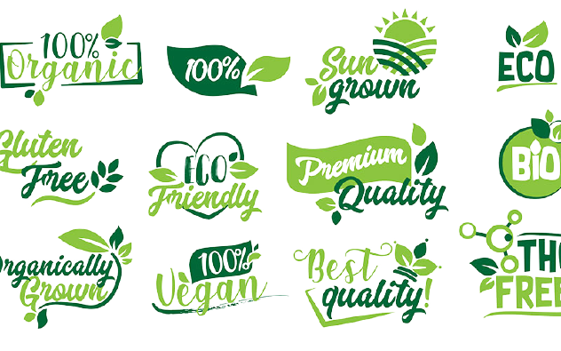
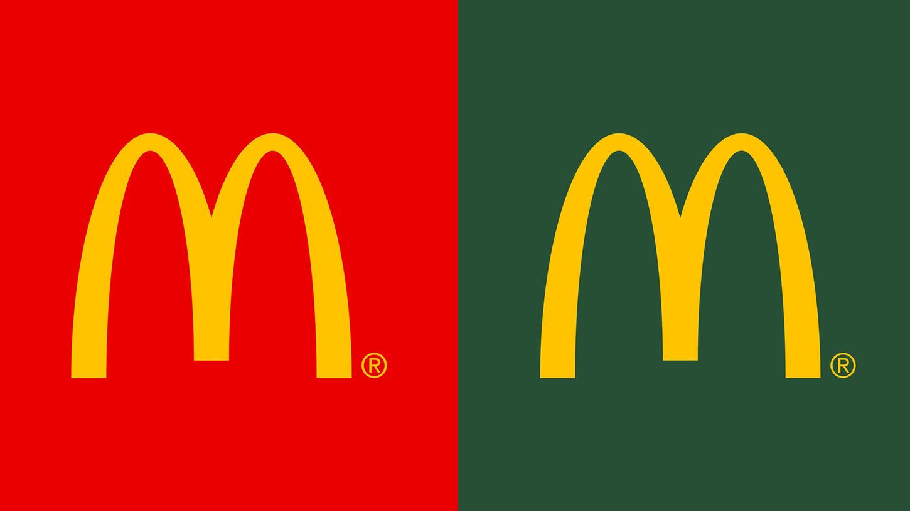
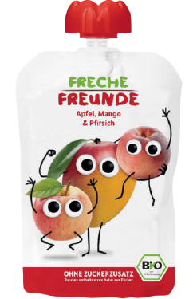

Tricks der Werbeindustrie
Häufige Tricks
Emotionen:
Emotionale Inhalte werden vom Gehirn schnell und gut gespeichert.
Farben:
Auch Farben lösen Emotionen aus und wecken bestimmte Assoziationen z.B.:
- Grün wird häufig mit Hoffnung, Frische, Gesundheit und Nachhaltigkeit assoziiert
- Rot mit Leidenschaft, Liebe und Schärfe; Rot ist eine der meistgenutzten Farben, um die Aufmerksamkeit auf sich zu ziehen.
- Weiß mit Unschuld und Sauberkeit
- Gelb mit Heiterkeit
- Mit Orange assoziiert man oft ein Angebot
- Blau steht für Vertrauen und Verlässlichkeit
Die Farben, die für die Werbung eingesetzt werden, variieren je nach Branche und Kultur. Lebensmittelverpackungen werden zum Beispiel immer grüner, da das nachhaltig, biologisch und gesund wirkt.
Genauere Ausführungen der Farben
- Grün wird häufig mit Hoffnung, Frische, Gesundheit und Nachhaltigkeit assoziiert
- Rot mit Leidenschaft, Liebe und Schärfe; Rot ist eine der meistgenutzten Farben, um die Aufmerksamkeit auf sich zu ziehen.
- Weiß mit Unschuld und Sauberkeit
- Gelb mit Heiterkeit
- Mit Orange assoziiert man oft ein Angebot
- Blau steht für Vertrauen und Verlässlichkeit
Die Farben, die für die Werbung eingesetzt werden, variieren je nach Branche und Kultur. Lebensmittelverpackungen werden zum Beispiel immer grüner, da das nachhaltig, biologisch und gesund wirkt.
Genauere Ausführungen der Farben
Beispiel: Cola nutzt schon immer die Farben Rot und Weiß, da diese Signalfarben sind. Wie die Straßenschilder Rot – Weiß sind, um unsere Aufmerksamkeit auf sich ziehen, machen das viele Firmen auf der Welt.
Innovation:
Erneuerungen werden mehrmals erwähnt, besonders betont und hervorgehoben. Auch wenn diese winzig sind, erweckt es für den Kunden den Anschein, als wäre es etwas ganz Neues.
Musik:
Ein guter Jingle „brennt“ sich in das Gehirn und man vergisst ihn nie wieder.
Außerdem denkt man immer, wenn man das Lied hört, an die Marke/das Produkt.
Außerdem denkt man immer, wenn man das Lied hört, an die Marke/das Produkt.
Es wird bereits existierende Musik verwendet.
Es wurde extra für die Werbung Musik produziert.
Werbeslogans:
Ein Werbeslogan hat die gleiche Wirkung, wie ein Jingle.
"Kundenmeinungen":
Oft werden in Werbespots vermeintliche Kunden befragt, die über ihre immer positiven Erfahrungen mit dem Produkt/der Marke sprechen. Dadurch vertraut man dem Produkt/der Marke mehr.
Präparierte Produkte:
Bei Lebensmitteln werden oft keine echten Produkte für die Werbung verwendet. Beispielsweise bei den Burgern bei McDonald`s.
https://www.watson.ch/leben/food/122409319-mit-diesen-tricks-sieht-dein-essen-aus-aus-der-werbung-fein-ists-nicht
(N.N.: In "watson". Veröffentlicht am 22.08.2019, 06:06 UTC+1. Abgerufen am 15.11.2021)
https://www.watson.ch/leben/food/122409319-mit-diesen-tricks-sieht-dein-essen-aus-aus-der-werbung-fein-ists-nicht
(N.N.: In "watson". Veröffentlicht am 22.08.2019, 06:06 UTC+1. Abgerufen am 15.11.2021)
Zeitliche Begrenzung:
Dadurch wird ein Gefühl von Druck auf den Kunden ausgeübt. Er denkt sich, er müsse es jetzt kaufen oder gar nicht. Unter Zeitdruck trifft er vielleicht die Entscheidung, etwas zu kaufen, was er sonst nicht gekauft hätte. Das Gleiche geschieht bei begrenzter Stückzahl.
Bekannte Personen:
Oft werden bekannte Personen oder Stimmen in der Werbung verwendet. Viele Leute halten ein Produkt für gut, wenn es von einer bekannten Person beworben wird.
Ein Beispiel hierfür ist George Clooney und Nespresso. 2006 drehte er seinen ersten Werbespot und seitdem verknüpfen viele Menschen die beiden automatisch miteinander.
Ein Beispiel hierfür ist George Clooney und Nespresso. 2006 drehte er seinen ersten Werbespot und seitdem verknüpfen viele Menschen die beiden automatisch miteinander.
Beeinflussung durch Greenwashing
Quelle (N.N.: In "wissenschaft.de". Veröffentlicht am 22.11.2017. Abgerufen am 15.11.2021)
- Seitdem das Thema Nachhaltigkeit zu einem immer wichtigeren Thema für die Käufer wird, nutzt auch die Wirtschaft diese Gedanken zu ihrem Vorteil
- Die Käufer möchten heutzutage ökologische, fair prodozierte und gesunde Produkte
- Da es für die Unternehmen viel zu teuer wäre, dass alles umzusetzen, setzen sie diese Sachen meistens nur scheinbar um, um Kunden zu gewinnen
- Es werden selbsterfundene Siegel genutzt, die keine festgelegte Bedeutung haben. Diese sollen nur den Anschein erwecken, gesund oder nachhaltig zu sein.
- Die Vorteile und guten Dinge an dem Produkt werden hervorgehoben und beworben, aber die negativen Sachen werden alle ignoriert
- Seitdem das Thema Nachhaltigkeit zu einem immer wichtigeren Thema für die Käufer wird, nutzt auch die Wirtschaft diese Gedanken zu ihrem Vorteil
- Die Käufer möchten heutzutage ökologische, fair prodozierte und gesunde Produkte
- Da es für die Unternehmen viel zu teuer wäre, dass alles umzusetzen, setzen sie diese Sachen meistens nur scheinbar um, um Kunden zu gewinnen
- Es werden selbsterfundene Siegel genutzt, die keine festgelegte Bedeutung haben. Diese sollen nur den Anschein erwecken, gesund oder nachhaltig zu sein.
- Die Vorteile und guten Dinge an dem Produkt werden hervorgehoben und beworben, aber die negativen Sachen werden alle ignoriert


McDonalds wechselte die Farbe von Rot auf Grün, um "grüner" zu wirken.
Beispiel „Quetschies“:

Auf der Verpackung steht, es sei sehr gesund und bestehe zu 50% aus Frucht. Nirgendwo steht, dass das Produkt zu großen Teilen aus Fruchtzucker besteht, der zu den schnellen Kohlenhydraten gehört.
Mit dem Versprechen eines gesunden Fruchtsnacks lenkt man gleichzeitig von dem vielen Müll ab, der um einen Quetschie herum ist.
Auf der Verpackung steht, es sei sehr gesund und bestehe zu 50% aus Frucht. Nirgendwo steht, dass das Produkt zu großen Teilen aus Fruchtzucker besteht, der zu den schnellen Kohlenhydraten gehört.
Mit dem Versprechen eines gesunden Fruchtsnacks lenkt man gleichzeitig von dem vielen Müll ab, der um einen Quetschie herum ist.
Product-Placement / Produktplatzierung
- Die Möglichkeiten der Platzierung von Produkten erstrecken sich von Film und Fernsehen über Zeitungen und Zeitschriften bis hin zu Comics, Musik und Videospielen
- Die Umsätze werden durch Produktplatzierung in Filmen und Serien oftmals gut gesteigert
- Denn wenn man Produkte dort sieht, werden wir beeinflusst und dazu verführt, das gesehene Produkt kaufen zu wollen
- Die Umsätze werden durch Produktplatzierung in Filmen und Serien oftmals gut gesteigert
- Denn wenn man Produkte dort sieht, werden wir beeinflusst und dazu verführt, das gesehene Produkt kaufen zu wollen